Heritmap 的初衷，是以青少年的視角，用數位方式記錄中國的文化遺產與相關故事。我們希望透過地圖、照片與文字，讓更多人看見這些場域的美與重量，並在世俗宣傳之外，多一個由學生主動發聲的角度。
我們的使命，是為文化遺產的保存發聲；我們的願景，是讓每一位讀者，都能在這裡找到一個與自己記憶相連的地方。
感謝所有曾為 Heritmap 投稿、分享照片與心得的朋友。你們的每一篇文字、每一次按下快門，都是這幅「文化地圖」中不可或缺的一部分。正是因為你們的參與，Heritmap 才能持續被填滿、被延伸。
We sincerely thank all contributors who have shared their articles and photos with Heritmap. Each submission is an indispensable part of this cultural map. It is through your participation that Heritmap continues to grow and flourish.
親愛的投稿者、研究者與每一位路過的讀者：
你好，我是孫靖遠（Jerry Sun），一名來自南京的高中生。
小時候，爸爸常鼓勵我：「盡可能跳得遠一點，去看一看這個世界有多壯闊。」沒有他的支持與推我一把，Heritmap 不會出現在這裡。距離我第一次參觀文化遺產（秦始皇兵馬俑）已經十多年了，那種震撼的感覺仍然還在。透過這個網站，我希望把那句話也傳給你：離開螢幕，走出去，看一看我們共同擁有的世界。
在這個資訊爆炸、社群媒體充斥、輿論容易被操控的時代，太多珍貴的聲音可能被淹沒、被誤讀，或者乾脆被消失。這個專案的目的，是盡力為那些真實的觀察和記憶留下一個空間——不是為了廣告、不是為了宣傳、也不是為了迎合主流，而是為了保存、為了真相，也為了記得。
謝謝你願意閱讀到這裡，也謝謝每一位選擇投稿、分享、指正或只是安靜看完一篇文章的人。因為有你們，文化遺產不只是歷史課本上的名詞，而是會說話、有情感的地方。
期待我們能一起，為未來多留下一些還能被聽見的故事。
謹此，
靖遠
